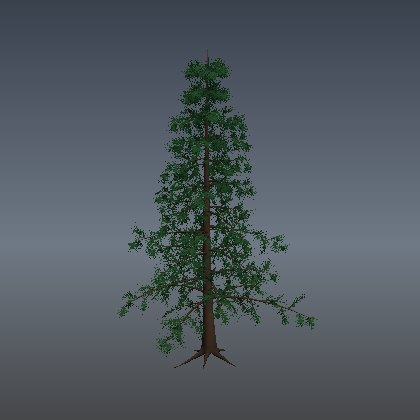
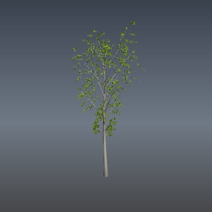
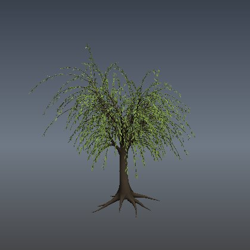
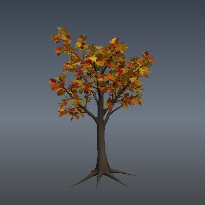
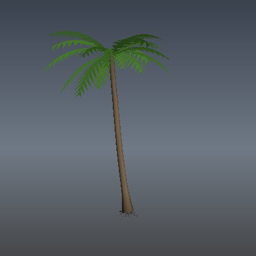
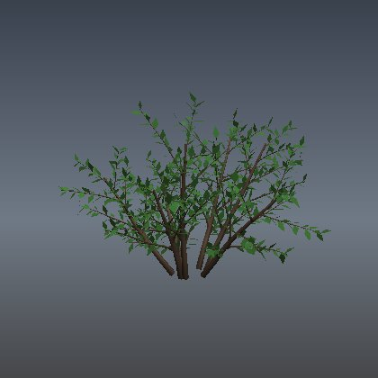
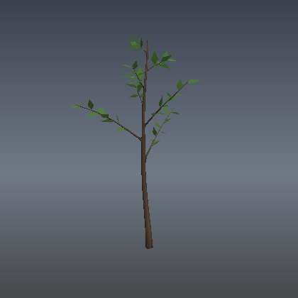

How trees are built
A tree in ArborStudio is a hierarchy of generators. Each generator describes one kind of part, such as the trunk, a level of branches or the leaves, and how many of them grow on each part of its parent.
Generators
There are four kinds of generator:
| Kind | Grows on | Creates |
|---|---|---|
| Trunk | The ground | One or more trunks or stems. A tree usually has one trunk generator; shrubs use several trunks. |
| Branches | A trunk, branches or roots | Branches along each stem of the parent. Stack branch generators to get main branches, twigs and smaller twigs. Under roots they create side roots. |
| Roots | A trunk | Roots that spread from the base of the trunk along and into the ground. |
| Leaves | A trunk or branches | Leaves, needles or fronds, or your own leaf model. |
The Oak preset, for example, has this hierarchy:
Trunk
├── Roots
│ └── Side roots
└── Main branches
└── Twigs
└── LeavesEach generator applies to every stem of its parent. If Main branches has a count of 10 and Twigs a count of 12, each of the 10 main branches carries 12 twigs, so the tree has 120 twigs. The Statistics tab shows the totals.
Values relative to the parent
Most values of branches, roots and leaves are relative to the stem they grow on. This keeps a tree in proportion when you change its size.
- Length of branches is a fraction of the parent's length. A value of 0.5 makes each branch half as long as the stem it grows from.
- Radius of branches is a fraction of the parent's radius at the point where the branch starts.
- Start and End are positions along the parent, from 0 at its base to 1 at its tip.
The trunk has absolute values: its Height and Radius are in metres. The Scale setting of the tree multiplies all sizes.
Seed and randomness
Natural trees are irregular, so most settings come with a variation, and ArborStudio draws random numbers when it grows a tree. The Seed decides which random numbers are drawn. The same seed and the same settings always give exactly the same tree, on every computer. A different seed gives a different individual of the same species.
- Randomize in the toolbar picks a new seed.
- Changing one setting changes only what depends on it. Branches don't jump to new places when you change, for example, the leaf size.
- Export variations writes several seeds of the same species in one step. See Exporting.
From settings to mesh
Whenever a setting changes, ArborStudio grows the tree again in three steps:
- Skeleton. Each generator places its stems on its parent and grows them segment by segment: it starts in the direction given by the angle, then bends with gravity, wiggle and forces. The result is a centre line with a radius at each point. The Skeleton render mode shows it.
- Mesh. The skeleton is turned into a surface: rings of vertices around each stem, shaped by flutes, flattening and bark lumps. Branches and roots are joined to their parents, and leaves are placed as cards or models.
- Extras. Texture coordinates, wind weights, ambient occlusion, collision objects and the lower levels of detail are computed from the mesh.
Presets
ArborStudio includes eight species presets as starting points. They are ordinary trees made of generators, so everything about them can be changed.







